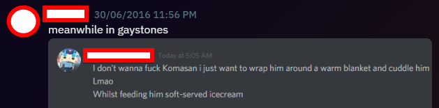
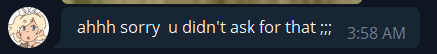
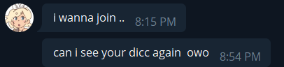
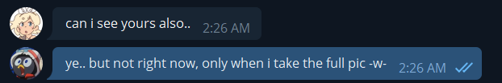
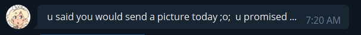
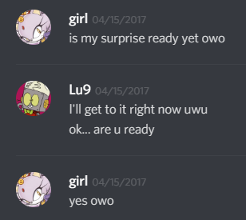
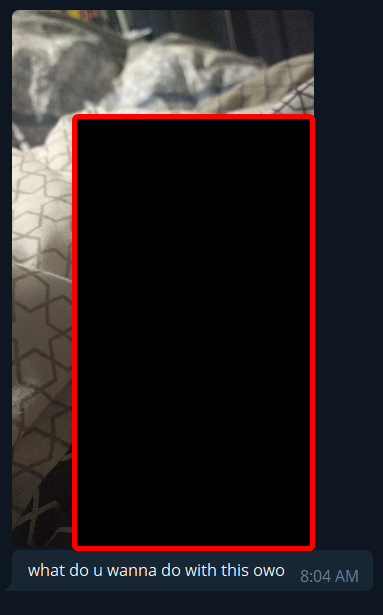
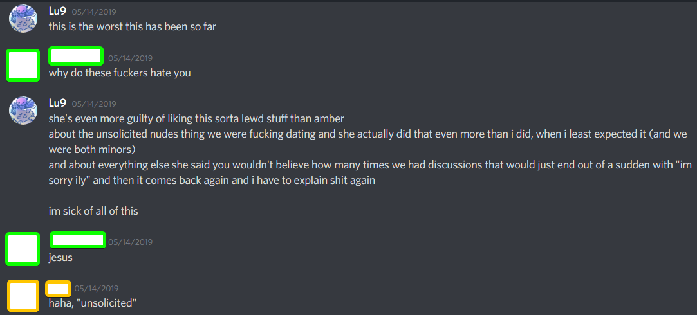
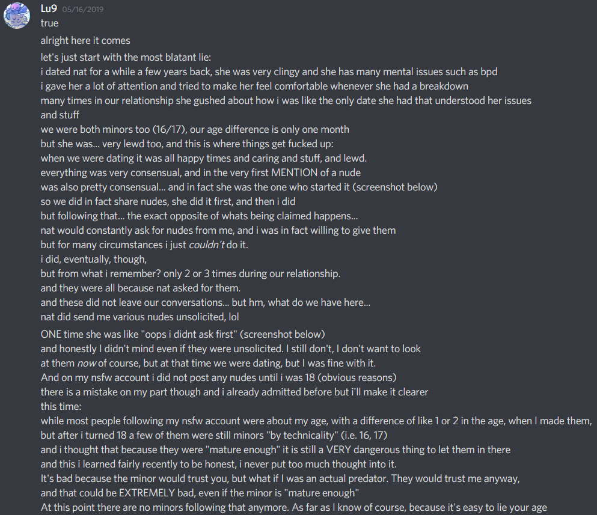
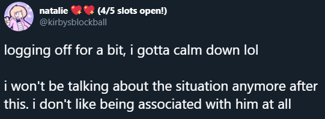

In case of callout, drop statement and run - Lu9 edition
Hi. It’s me again. I’m tired. I have been dealing with harassment and slanderous campaigns pretty much since I turned 18 (wonder why, huh) and while some people moved on from it (as far as I can tell) others came to me because of continued spread of misinformation. I really want to put this to rest, and not have to revisit these mentally scarring topics.
There are a couple of friends I have (who I will obviously not disclose for their own safety and anonymity) that don’t even feel safe associating with me publicly (even though they either “align” with my views or just don’t mind them) because of how aggressive and inhuman some people can get, as you’ll see below.
This is a new document (started in 2023, finished in 2026, updated in ) to unify two past documents. You may cross reference this with the previous ones to verify the consistency of the presented claims.
Content/Trigger Warnings for: NSFW subjects, mentions of paraphilias and grooming
It also really should go without saying but people are dense: do not seek or harass anyone mentioned in this document, it just makes things worse for everyone.
Introduction
Before getting to the subject at hand, I’d like to ask you, the reader, to have good faith, mature and nuanced thoughts to process what I have to say, even if you don’t agree.
For the longest time online, I’ve been what some folk these days call “pro-ship” or “pro-fic”, a reliable definition of that can be found here. I don’t like labels like that much as they are reductive, prone to generalizations, etc. but the core beliefs presented are something I agree with, and that’s not changing any time soon. I’m friends with several NSFW artists, and draw it myself sometimes. Some draw loli, shota, cub, feral, non-con… who cares. It’s fiction, it IS as simple as that, and we really mustn’t revive pointless “videogames cause violence” discourse that we all know isn’t true, or parrot what are basically conservative christian puritan views under a progressive coat of paint. “A drawing of what?”, some might say, and yes, you can say it depicts a child/animal/whatever -- the argument is that it doesn’t matter, and doesn’t correlate with one’s morals and desires 1:1, full stop. (At the end of this document there are links for anyone interested in learning more) I also don’t believe in thoughtcrime, or that merely having a paraphilia makes anyone an abuser. And many other things! I’m brazilian, and time and time again it has been shown that this insistence on what is almost entirely rooted in evangelical guilt is mostly an american thing.
That and a lot of projection has been seen - some pretty loud voices claiming moral superiority while having their own skeletons in their closet. That does not “prove” the arguments made by pro-fic folk, but it is a statistical phenomenon that can’t be ignored.
Most importantly, people should realize that… people are complex. The whole world is too complex to view everything as just black or white. “Good” or “evil”. Everyone is imperfect, makes mistakes, and many times just won’t get along with each other, and that’s okay. As long as we can have mature, civilized conversations, without having to appeal to emotions or personal attacks, everything is fair game.
If you’re still with me and actually want to hear what I have to say, good. We can continue.
What is true (things I’ve addressed and apologized for)
- I had a locked (private) NSFW account on Twitter that I made as a minor (15).
Puberty and stuff, you know how it is. Other friends around my age had similar accounts as well. Contrary to what mostly uneducated USAmericans think, teens do get sexual amongst themselves and we should stop pretending they don’t and stop infantilizing them and lumping them with children. That, of course, DOESN’T excuse how terrible of an idea this was (and how it could’ve potentially put me and/or others in danger), but I thought I’d mention it.
That account stayed up until even after I turned 18, with the same people around my age allowed in, still. I took longer than I should have to both realize how this could’ve gone very wrong (with me even allowing some 18+ people to access the account when I was 15 myself) and to kick anyone who was still underage (by the time I turned 18) out.
- As mentioned previously, I draw NSFW content myself sometimes. It’s niche and not for everyone. I only started doing it when I was close to turning 18 and nothing was made public online until after the fact. While this is true, I have nothing to apologize for regarding this. Anything NSFW I make is posted under an entirely separate alias (Which was never supposed to be a “secret” either, just separate enough that minors and people who wouldn’t want to see this type of content wouldn’t have to come across it.)
So if you don’t want to see it, you don’t have to.
Everything is tagged, and the block button is free.
Anything else claimed by others in this document regarding my behavior is either a bad faith interpretation/distortion or outright false. I will of course elaborate on why that is, so let’s begin.
SiivaGunner
For the uninitiated, a brief summary: SiIvaGunner, formerly GiIvaSunner (both with an uppercase “i”) is a collaborative YouTube channel originally made in 2016 as a meme, bait and switch parody version of GilvaSunner (with a lowercase “L”), a now defunct channel that posted music rips of mostly Nintendo games. Interested in the channel’s concept from the beginning, having some experience with manipulating video game music, I made my own unofficial “rips” and I was soon invited by the channel’s creator and at-the-time lead manager, Chaze the Chat.
They initially had a Discord server where invited contributors could submit their “high quality rips” and chat with the channel’s staff (”backroom members”, as they called it).
It also, like many other servers at the time, had a channel dedicated to sharing NSFW content. I was 16, some members and contributors were slightly younger or older.
For some reason, perhaps due to the level of activity that the NSFW channel was having, it has been decided at some point that an entire separate server would be made for contributors and backroom members to share NSFW content, rather than a singular channel. Thus the lewdstones server was created.

Lewdstones server
The lewdstones server was split into channels separated by subject and preferences. For instance, #gaystones was for any male/male or female/female content. There was even a channel for kodocon (loli and shota) called #smolstones.

One notable, infamous figure in the SiivaGunner community that has been discussed about a lot already is Blazephlozard. He was, at the time, a backroom member, and a frequent user of lewdstones.
On that server, Blaze had made sexual advancements and comments towards minors who were in there, as well as questionable claims such as “not believing in the age of consent” and others which some SiivaGunner fans may be familiar with.

One person shared their experiences with Blaze in a TwitLonger post here.
One day the lewdstones server was dissolved without warning. It was likely for the best, considering minors (such as myself) were there, with Blaze, and other much older people.
You likely will not find anyone currently associated with SiivaGunner acknowledging the existence of this server.
By October of 2016, Blazephlozard had been officially kicked out from the team.
Blaze would start his own SiIva “fan channel” called TimmyTurnersGrandDad, but would quickly step down from his position.

Promotion and Demotion
As time went on, I was “promoted” on SiivaGunner to the role of “QoC” (Quality of Control) which meant I could approve, reject and give feedback on submissions.
Eventually I would be promoted again, this time to a full on “backroom member”, the highest “ranking” in Siiva, up with the channel managers. I was then invited to join a separate server for backroom members.
I did not participate in that server a lot, as it felt overwhelming, and at times uncomfortable.
The environment in general was not pleasant. At times it was toxic. At least at the time I joined, they had a text channel named #lolcows.


One of the people they’d also talk about on that channel was my friend Blazinter (NOT to be confused with Blaze/phlozard) who you might remember for consistently commenting on every Cave Story rip back then.
After they found out I had been sending screencaps from the backroom server to him, I was (understandably) “demoted” back to QoC.
After all of this, things stayed quiet for a while. We will get back to SiivaGunner, but first, a new key character enters the story.
Natalie
a.k.a. natalietchi / ytpmvinthemorning / wattlerose / hotelvalentine / kirbysblockball / other names
Especially for this section (and part 2) - Content/Trigger Warnings for: mentions of mental illnesses, abuse, manipulation, doxxing
In 2017, I started dating this person. She first contacted me to alert me about artwork of mine being stolen in some print-on-demand website, but had been wanting to talk to me for a long time.

Relationship
We would quickly get along well, aided by us both being autistic (with me having been “officially” diagnosed at around the same time) and being 17 years old, with our birthdays being only a month apart.
The more we continued talking to each other, the more flirty she would get, and I’d reciprocate the feelings as I had just gotten out of a difficult break up and was quite lonesome as a result.
Eventually we started dating officially, though in order to do that, she broke up with her previous partner who would “only talk to her twice a week and then leave”, according to her, and she was tired of waiting (this was much before we both discovered our poly tendencies)
This of course was a bit weird to me at the time, but I accepted it, I felt lonely enough that I was willing to take any romantic relationship I could get (this would eventually lead to my poly/aro self-discovery journey)
Before we started dating officially, she had already sent NSFW artwork, it was humorous in tone, but it did serve as a sort of gateway to talking about sexual topics. This would escalate quickly after we were officially together, with her getting very sexual with me, and initially, I wouldn’t mind it.
Our relationship was going well, she told me some information she thought was relevant and that I should know, such as her having BPD (Borderline Personality Disorder). I thought of course that was quite fair and didn’t have any problem with that, and Nat was taking proper care of herself too.
Dumb fights
After some time, I presented Nat to my then best friend (as well as ex) Amber (who I’ll be talking about more specifically later) and we all mostly got along. Sometimes though, Amber would start pointless arguments and discussions with me (as she already would do prior to me meeting Nat, and seemingly at random, in specific moments of the year, like a seasonal mood swing maybe, I wouldn’t know how to explain it), and that would upset Nat.
As time went on I started to feel more like I was stuck to this relationship like I had a ball chain attached, I didn’t feel free. I thought a peaceful break up would be the best course of action. This would be the starting point of an important self-discovery journey to me.
So we broke up, but we were still friends. Of course, she was sad at first, but got over it quickly. Amber was also still around. As was one of my current partners, who, in 2018, worked on a game jam game with me and Nat. Today she seems regretful about this game (considering she designed the main character and drew sprites), but even at the time, she tried to coerce this partner into a dubious mindset.

(Some years later)

Despite this, we finished the game and were still fine with each other.
One day, Amber seemingly randomly decided that she’s had enough of me for reasons she was also “guilty” of -- liking kodocon-adjacent art. Nat, who also enjoyed such art, still considered me a friend even after that and defended me for a little while, until she also decided to pull a 180° and started outright hating me. Then the bullshit began.
Baseless claims

Natalie started a twitter thread (starting with the above tweet) after Amber did one as well regarding the fictional problematic content which they both enjoyed not too long before that, even.
But more importantly, in Nat's thread, which she quickly took down, there were some very strong accusations and blatant lies about me.
A few days later Nat also uploaded a video, containing the same accusations in the video description, and screencaps of Amber's thread in the video itself. I was sleeping at the time but friends of mine quickly noticed it and talked about it.


The video was, much like everything else, taken down quickly.
The accusations ranged from “he had lots of issues with The SJWs (tm)” to “he sent me unsolicited nudes” with blatant appeal to disgust.

Really? Did I do such a thing? Let’s see…










As you can see, not only did Nat solicit a lot (and I didn’t always give her, usually due to personal space reasons but also laziness), but she was often sending unsolicited nudes herself.
As for my NSFW account, I had posted pictures after I turned 18 (still very rarely) though there were still people under 18 in there as I mentioned before. This was a mistake and I took care of it. Such an occurrence has not happened since then.
The claim mentioning “problems with the SJWs (tm)” is an exaggeration of old opinions I had that I no longer support, although I still oppose a lot of extreme, radical stances, but mostly this was over me arguing that having your pronouns in your bio are a good thing but “not an absolute requirement”, as some people could be in situations where having them publicly displayed could put them in danger, or they just simply don’t want to be bullied. And that’s all. I did use the term “SJW” negatively back in 2017 and before, but I’ve grown to learn that people in general are more nuanced than that.
Anyways, after all of this died out, Natalie would still try to enact her plan, to “bar me from every community channel I was a part of”, as she put it herself.
She tried with Vinesauce, because she saw that I edited a video for them once, it didn't work. (Yes, I haven't edited another video for Vinesauce, but that's because I wasn't "hired" as an editor. I just offered to edit a video once as a one-off thing)
However it may have worked on our favorite high quality rip channel. Let’s go back to it now.
SiivaGunner - part 2
Kicked out

In December of 2019, a decision has been made to kick me, with former SiIva backroom member Twonko (who is also currently no longer part of the team, and goes by a different name that I do not know at this point) giving me the news that it was due to allegations that are all too familiar. I wasn’t given a single chance to defend myself (Or the decision had been made while I was away or sleeping). They never sent me whatever this "evidence" was. And we'll likely never know.
I believe we do know who it was that sent it, though…

After 2020, Chaze the Chat had mysteriously vanished from the internet. The channel’s co-creator, MtH, took his position as leader, as a consequence.
It would be revealed much later by MtH that the decision to ban me from SG was mostly insisted upon by Twonko. They already didn’t like me much in the first place and has caused trouble of their own for the team. More on that to follow.
The light at the end of the backrooms
One day in 2022 I thought I’d send a message to MtH telling everything I knew… couldn’t hurt, and it did seem to me that MtH was somewhat chill and would know to handle this maturely.
I wasn’t expecting a response (or at least, not too soon), but one day, out of nowhere, I get something… not from MtH, though, but seemingly another backroom member who has reached out in an anonymous manner.


After this exchange, this individual has basically disappeared and I never heard back from them. Wherever you are, if you’re reading this, I just hope you’re doing well, and thanks for the kind words.
MtH’s response
Eventually, in 2023, I tried reaching out again and this time she did reply, and I’d say it went… much better than I was expecting.


So that’s… interesting. She acknowledges that “false accusations are involved”, but made it clear that, seemingly, the problem is mostly what I draw under a separate alias (that no one has to engage with to begin with).
All things considered, that is something I can respect. It’s not baseless. What can I do if people are not comfortable around me knowing what I draw (That isn’t to say that “rather large library of nsfw art of mostly underage characters” isn’t a massive exaggeration, with it not being “rather large” nor being “mostly underage characters”, I’d say most of them are ageless, but, y’know, doesn’t matter.)
I think it was considerably fair, and so I let things go for a while…
MtH in 2026
For a bit I didn’t think I’d even have to say anything further regarding MtH, and I would’ve ended the subject there.
From the response to my message a few years earlier, I understood that we were at least on neutral terms, or so I thought. For some time I was blocked by her on Bluesky. That seems to no longer be the case (?)
Fast forward to 2026… the… very unnecessary “news” that MtH has “reposted feral pokémon art” reaches me (I didn’t seek for this info myself, it was just brought up in a conversation).


It might not be obvious to some, but… furry pornography depicting non-anthropomorphized “feral” animals (or in this case, fictional monsters I guess) is also a heated topic of debate (for illiterate idiots) much like kodocon media, for similar reasons. On top of it, said reposted art might even fall into “noncon” or at least “dubcon”.
Yes, I don’t think any person should care about what kind of fictional porn MtH or anyone else enjoys on their personal account, but still, knowing what she has said previously, it all does come off as quite hypocritical. Are there not people in the SiivaGunner team who would be uncomfortable with that? Is it only bad when -I- do it? What does she think about this potential hypocrisy? I was curious to get a reaction, so I made a post and tagged her from my NSFW account (because as I said, she had blocked me before), and…

Oh. Well.
If at the end of the day it isn’t about the kodocon media, it’s possible Natalie’s bullshit might still be persisting around through word of mouth, and insane previously unseen fucked levels of telephone game.
Oh yeah, there’s more about her.
Natalie - part 2
Retconning the narrative
On April 2020, Natalie decides to give a shot at #cancelling me again, so she finds my NSFW alias on Twitter, and claims that I “groomed” one of her friends.
i was careful this time and archived the tweet before she would take it down, here.

So, the alleged “unsolicited pictures” and the personal nsfw account and other things are no longer a problem? Pretending it didn't happen? Geez... it's almost like maybe… you made all of that up...
She never elaborates on who was "groomed" here. (We will see that in the next section)
If it's because of anyone who used to follow my old nsfw account, well they're not there anymore, as they should.


“grooming”
September 2020, Nat is back at it again with another spicy callout... or... whatever this is.

First of all, she could very well find “receipts” as she has not deleted her entire Telegram chat history with me (which is something you can do, and you can make it become deleted for the other user as well), and so I (unfortunately) still have that in my Telegram overall history.
Second, this tweet is followed by screencaps of her own text ("source: dude, trust me")
and now we're back to false/distorted claims. Let's go over them one by one.


That being said, nat did have a discord server with her friends (some were minors, some weren't), which, guess what, had an nsfw channel. and "person" was a member there, and nat would post in that channel as well. one of "person"'s first interactions with me was them telling the source of their twitter profile pic at the time, which was a succubus character from an nsfw artist. all i said was that i didn't have a problem with that. i did however let them into my nsfw twitter at the time, which, AGAIN - i shouldn’t have done. i think the old twitter of "person" was deactivated so I can't go to their DMs to confirm. but again, despite this, the nsfw channel in nat's server still existed, even after the fateful day one of my friends was just booted from the server with no real explanation, and then a bit afterwards I was booted from it as well. I'm not sure if my partner was there, but if they were, they probably got the boot too.
So I don't think you can say any of what I said counts as "grooming"…?


Pretty sure there’s nothing more. and at least i have receipts to show. If you find anything actually bad that isn't a lie that I have done that I don't have the memory of, then fair! Tell me (preferably show me) what it was and i'll own up to it! But despite having access to our entire Telegram AND Discord DMs, you're not showing anything. you just want a pat in the back. You like to put a spin on the scenarios so that you're the "good person" in the whole story.
There might be chronological inaccuracies here and there - I can only go as far as discord and my own memory lets me. Here are some related receipts:


Nat’s past
At certain times during our relationship, nat would talk about her past:
Then at some point during the time Amber and Nat were fucking around trying to cancel me, I reached out to a friend who also had a relationship with Nat, and also had info on these supposed “bad things”:

Now, I do want to make it clear that someone’s actions in the past Should not define someone, and that if one owns up to their mistakes, they shouldn’t be judged by what took place in the past, I do think however that this is relevant to know.
Amber
a.k.a. EtherianAmber / Famulator64
Amber was my oldest friend in this entire thing, she had been with me since 2015 or so. We met through MFGG (Mario Fan Games Galaxy), we’d shitpost on Twitter together, chat on Skype (and later Discord), eventually even date… twice.
Everything just went relatively well for years until it suddenly didn’t.

I still remember having a conversation with her before involving thinking of Niko from OneShot in a sexual manner. I’d tease her over it and she’d be quick to defend the idea that Niko is a teen, like we were. All in good fun. But then as time went on in 2019 she started to gradually tweet more and more “reaffirmation” shit (pictured below), which at times seemed to be vaguely gestured towards me -- which later culminated in their first callout post. Moralism, man!


Amber and I were also friends with Colleen (netscapenow) for a while as well, until they too left me in the dust and started dating Amber (not sure if they still are)
Maddy
a.k.a. saladplainzone
I probably wouldn’t have included this here if it weren’t for them completely breaking my trust, so now I only feel is right to say a few things about them, as it very much contributes to the other sections of this document.
Maddie used to be a person of trust when it came to these situations, someone I could count on, who claimed to not give up on me despite everything, but perhaps I was too naive.

That said, they have trusted me with some pretty personal info of theirs that I won't get into here as it is not relevant to the subject whatsoever. The bottom line is they did make it seem like they were trustworthy by going as far as telling me some of the things they told me, and to me that is the scummiest shit ever. That’s no friend of mine.
They did do everything they could to not have anything to do with me and my “controversies”, including unfollowing and refollowing me on social media several times -- which I should have taken as a sign. They also explicitly did not give permission to use their (quite damning) screencaps of Nat, likely to also avoid just having any involvement in this whatsoever, but buddy, you broke my trust, so I believe that is void and means nothing anymore.
Maddy and Nat
In early 2020, Maddy dated Nat for exactly two days. At this time, they were 17. Not that this should truly matter to anyone, but it was made pretty clear by Nat that it does matter to her, except when she does it, apparently.


A bit afterwards, they started to send me things that Nat had confessed in their DMs:


They tried to break up peacefully with her but still maintain a friendship.


I have no idea how’s the general relationship between these two nowadays, and I don’t think I really want to know. And as mentioned at the start of this page, don’t go bother them.
Current day
SiIvaGunner Wiki
At this moment, my contributor page on the officially endorsed SiIvaGunner wiki has libelous affirmations.

The alleged “confirmation” comes in the form of a lousy discord message that proves absolutely nothing, from a channel member that joined the year after all of this went down, and wouldn’t be officially part of the team (backroom) until 2024. They simply should not be the arbiter of a situation they never witnessed.

Once again, this “clear cut evidence” is not elaborated upon, ever. You’d think that MtH’s word would have more weight as the literal channel co-owner, but it doesn’t matter in the end as I am powerless to stop this -- the page has been locked indefinitely from editing. I know there are at least a couple backroom members who sympathize with my situation. So if you can do anything, even the smallest thing, I’d appreciate just setting things right.
I don’t want to “scrub” the reasons for my removal from the team, or to control the narrative, or even to get back on the channel. Just to correct literal misinformation, as this is libel, full stop.
Special Thanks
- My friends/partners who helped me revise and proofread this document. And for just being there when I needed them the most while all of this was happening.
- The mysterious anon from the SiivaGunner backroom.
- Chaze the Chat, whom I have reason to believe wouldn’t have allowed this to get as out of hand as it did. Wherever you are right now, thanks for the opportunity to be a part of this otherwise great project.
Special Unthanks
- To everyone who antagonized me, threw me under the bus and contributed to making my online life hell. Especially: WavePrism and dille/nescartridges.
- PVic Games and friends (of Ednaldo Pereira: Mescladasso fame) for throwing me under the bus over my kodo art.
- The 2020 admins of the Twitter gimmick account “Out of Context Everything” (idk who manages that account anymore or if the same people are still around) for the continued spread of misinformation.
 https://x.com/purity_culture/status/1614285461639364609
https://x.com/purity_culture/status/1614285461639364609 https://en.wikipedia.org/wiki/Age_of_consent_in_South_America#Brazil
https://en.wikipedia.org/wiki/Age_of_consent_in_South_America#Brazil
 https://www.psychologytoday.com/us/blog/women-who-stray/201808/science-stopped-believing-in-porn-addiction-you-should-too
https://www.psychologytoday.com/us/blog/women-who-stray/201808/science-stopped-believing-in-porn-addiction-you-should-too
{kind=link}
{kind=link}
{kind=link}
{kind=link}
{kind=link}
{kind=link}
{kind=link}
{kind=link}
{kind=link}
{kind=link}
{kind=link}
{kind=link}
{kind=link}
{kind=link}